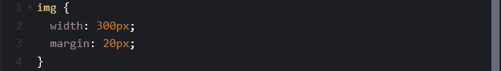
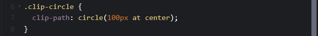
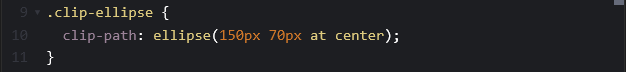
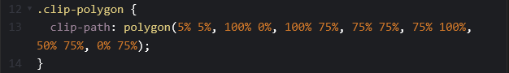
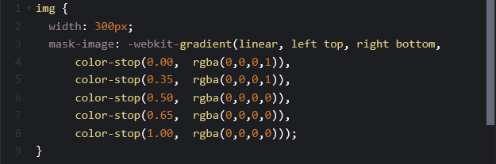

CSS Masking and Clipping
CSS masking and clipping are ways to control the visibility of an element to create unique shapes and designs.
What is Clipping?
Clipping uses vector paths to control which parts of an element can be seen and which parts are hidden. Anything outside of the path is transparent while everything inside remains visible. This is done using the clip-path property and is ideal for cutting out shapes like circles, polygons, or custom shapes.
What is Masking?
Masking uses images or gradients to control the visibility of an element. Masking allows for parts of the element to appear fully visible, partially transparent, or completely hidden. Masks are perfect for creating complex visual effects like smooth fades and soft edges. This is done using the CSS mask property.
How do we use them?
Below are some examples of CSS clipping and masking in use.

Circle (.clip-circle)
Circle 100px sets the radius and 200px wide in total.
"At center": sets the position. It places the center of the circle exactly in the middle of the image.

Ellipse (.clip-ellipse)
Ellipse 150px and 70px are the two radii. The first number (150px) is the horizontal width, and the second (70px) is the vertical height.
"At center" : Just like the circle, this keeps the shape perfectly centered on your image.

Polygon (.clip-polygon)
This is the most powerful tool. It creates a custom shape by connecting "dots" (coordinates). Each pair of numbers (like 5% 5%) represents an (X, Y) point.
How it works: It draws a line from the first point to the second, then the third, and finally closes the shape back at the start. The coordinates: 0% 0% is the top-left corner. 100% 100% is the bottom-right corner.

Masking
This code creates a fading effect that gradually makes part of your image invisible.
Where the mask is solid black (rgba(0,0,0,1)), your image is fully visible.
Where the mask is transparent (rgba(0,0,0,0)), your image is hidden.

Check this out!
Here's some fun sites to test it out! Visit Clippy - CSS clip-path maker
See the Pen CSS and SVG Masks by yoksel (@yoksel) on CodePen.